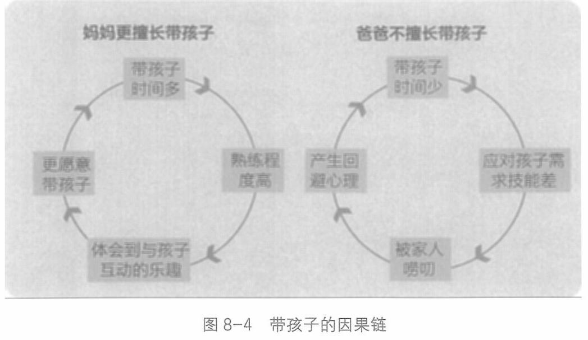

第八章 场景的分歧：产品场景匹配

也必然是这个家庭最美好的共同回忆和愿意对外晒的社交货币。
于是，这家游泳馆每开到一个城市，几乎都可以快速切入这个城市的社交人群。因为几乎每个报了这门亲子课的家庭都会在社交圈里晒：晒的不仅仅是自己的消费能力，更是自家爸爸每周去带娃——这是更值得其他家庭羡慕的。
一家游泳馆，把场景切细，找到一个感知最强的场景，在这个场景中把体验打磨到极致，就成了有犀利竞争力的新物种。
这就是产品场景匹配的过程。
强产品从强场景开始。
243